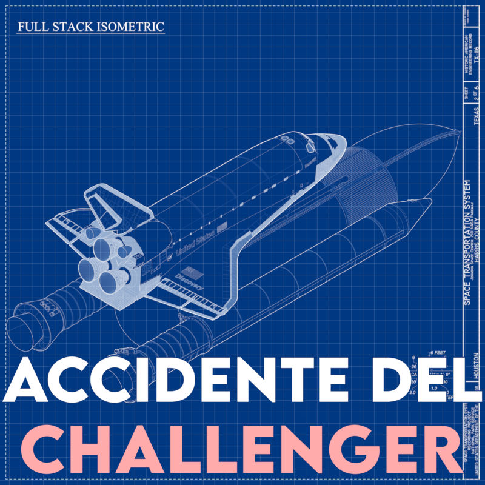

Explosión del Challenger
Cuando todo sale mal, episodio 2

Éste es el segundo episodio del podcast “Cuando todo sale mal”. Escúchalo en Spotify, Amazon Music, Apple Podcasts, Castbox, Pocket Casts, YouTube, o baja el mp3.
Este artículo es su compañero fiel: puedes encontrar aquí la transcripción completa, junto con fuentes, notas y música.
Episodio 02: Explosión del Challenger
Estamos en Flórida, Estados Unidos, el 28 de enero de 1986. El transbordador espacial Challenger está a punto de empezar su viaje número diez. La maestra Barbara Morgan está viendo el despegue desde lejos. No ha podido estar a bordo porque su colega Christa McAuliffe fue la seleccionada para la misión, y ella es la suplente. Hace un frío bajo cero, algo muy poco habitual en Cabo Cañaveral que suele tener clima tropical.
El Challenger despega sin problemas. El público aplaude, y los operarios de la sala de control se felicitan, sin tampoco demasiado entusiasmo. No deja de ser una misión rutinaria.
A los 75 segundos del despegue, Barbara mira aterrada: algo va muy mal. El transbordador se convierte en una bola de fuego, y en un par de segundos explota dejando un espectacular rastro en el cielo.
En la sala de control de la misión reina un silencio sobrecogedor. Cada miembro del personal de ingeniería presente está luchando contra la disonancia cognitiva. Es la primera vez en la carrera espacial norteamericana que mueren humanos a bordo de una nave espacial en vuelo. Es difícil saber cómo reaccionar, aparte de con un desánimo absoluto. ¿Qué ha salido mal?
Estamos en “Cuando todo sale mal”, con tu anfitrión Alex Fernández, “pinchito”. En este episodio vamos a analizar las causas del accidente del transbordador espacial Challenger, el más grave de la historia de la conquista del espacio. Repasaremos la investigación que también tuvo su drama, y de paso veremos algunos momentos bastante oscuros de la historia de la NASA.
Capítulo 1: la catástrofe
El programa del transbordador espacial prometía llevar a los Estados Unidos a la siguiente fase del programa espacial: hacer que los viajes a órbita fueran algo rutinario.
Se construyeron inicialmente cuatro transbordadores operacionales. Es difícil explicar la expectación que los lanzamientos de los transbordadores levantaban cuando empezaron a volar en 1981. A su lado, las empresas privadas de cohetes de hoy día (SpaceX, Blue Origin) son cosa de cuatro friquis.
Un avión montado en un tanque gigante con dos cohetes súper potentes a los lados. ¡La primera aerolínea del espacio estaba en marcha! Pero a los pocos años resultaba difícil mantener el interés del público general. Se trataba de acontecimientos bastante frecuentes, y que todo el rato se posponían por motivos técnicos. Así que para crear hype se había añadido a la misión una maestra de primaria, Christa McAuliffe. ¡Se iba a conectar en directo con su clase! ¡Iba a hacer experimentos en el espacio!
La decisión
Vamos a pasar ahora al día anterior de la misión fatídica, y vamos a seguir el incidente a través del relato de uno de los ingenieros de Morton Thiokol, Robert Boisjoly. Thiokol es la empresa contratista que fabrica los cohetes propulsores laterales, y no están teniendo el mejor día pre-lanzamiento: durante una de esas (en teoría) aburridas presentaciones de ingenieros con muchas transparencias, los ingenieros desaconsejan seguir adelante con la misión. Boisjoly nos cuenta cómo no se recomienda despegar por debajo de 10 grados. Vamos a ponerle acento gallego falso, porque no todo el mundo va a ser de Castilla la Vieja.
Por debajo de 10 grados se espera fuga de gases. Es una suposición razonable. […] Se espera que la temperatura sea de 2 grados bajo cero a las 9 de la mañana y de 3 grados a las 2 de la tarde. […] Nuestro responsable del programa dice que su recomendación es “no lanzar, basada en la presentación que acabamos de hacer”.
Pero están en conferencia con el centro espacial Marshall. Desde la NASA se les dice en ese momento que es una decisión pésima, y que tienen que volver al rincón de pensar. El manager de la NASA, Larry Mulloy, desesperado, pregunta:
“¿Cuándo queréis que despeguemos, Thiokol? ¿En abril?”
Boisjoly continúa:
Sentí la presión del comentario de Larry Mulloy, y me puse muy nervioso. […] [El jefe de la NASA] terminó diciendo que los datos presentados no eran concluyentes.
Boisjoly nos cuenta cómo esto representa un cambio sutil pero a la vez radical:
Pensad esto un momento. Estamos en esta reunión, la revisión de preparación para el vuelo, para demostrar que es seguro lanzar. Su frase sobre que nuestros datos no le convencen viola las condiciones arraigadas de la NASA de forzar a los contratistas a demostrar que es seguro lanzar. Decir que no hay suficientes datos ha sido siempre una condición automática de “no lanzamiento”.
Tras una discusión acalorada entre los ingenieros y jefes de Thiokol, Boisjoly nos reporta:
Justo antes de votar, el director general [de la empresa] se giró al vicepresidente de ingeniería y le dijo: “quítese el gorro de ingeniero y póngase el gorro de manager”. […] Poco después votaron: cuatro votos a favor del lanzamiento.
El vuelo tiene por fin luz verde, pese a la oposición unánime de los ingenieros de Thiokol, que lo están pasando francamente mal.
El día del lanzamiento, según Boisjoly, uno de estos ingenieros expresa su opinión en voz alta:
[El ingeniero] Al McDonald, le dice al [responsable de la NASA] Mulloy en el centro espacial Kennedy que no querría tener que testificar delante de una comisión y explicarles por qué lanzó por debajo de la temperatura especificada de cinco grados Celsius.
Spoiler alert: Al McDonald terminará testificando delante de una comisión. Boisjoly está aterrado:
Estaba decidido a no ver el lanzamiento el día siguiente, porque tenía mucho miedo de lo que podía pasar, pero uno de mis colegas tenía una hija que nunca había visto un lanzamiento […] así que me senté a verlo con ellos. Cuando el vehículo salió de la rampa de lanzamiento le susurré: “hemos esquivado esta bala”. […] Un minuto después me dijo que acababa de rezar por un lanzamiento exitoso.
Motores acelerando. Challenger, sube el impulso.
Trece segundos después vimos los dos el horror de la destrucción con nuestros colegas en la habitación, según explotaba el vehículo.
En España
Portadas de El País tras el accidente. - 29 de enero de 1986: “Reagan promete continuar el programa espacial, pese al desastre del ‘Challenger’”. - 30 de enero: “La tragedia del ‘Challenger’ puede retrasar un año el programa espacial”. - 31 de enero: “El Pentágono presiona para reanudar el programa espacial”.
Otras catástrofes espaciales
Hay que resaltar que, aunque nos pueda parecer extraño hoy, la carrera espacial en Estados Unidos sólo había causado tres víctimas en tierra hasta ese momento.
La Unión Soviética sí había sufrido un par de misiones con accidentes mortales: en 1967 la Soyuz 1 causó la muerte de Vladímir Komaróv al no abrirse el paracaídas tras la reentrada. Y en 1971 ocurrió la única catástrofe en el espacio propiamente dicho hasta el día de hoy: la descompresión de la Soyuz 11 durante la reentrada que asfixió hasta la muerte a sus tres cosmonautas a bordo.
Lo más cercano en Estados Unidos fue la misión de entrenamiento Apollo 1 en 1967 que terminó con tres vidas humanas, por un fuego eléctrico en la atmósfera de oxígeno puro. Pero estaban en tierra. Tras la catástrofe que nos ocupa, de un día para otro Estados Unidos había sufrido más bajas que la supuestamente inferior URSS. ¿Cómo era esto posible? ¿Qué estaba pasando?
Capítulo 2: la investigación
Para analizar este incidente tenemos acceso a tremendas fuentes primarias. Recordemos que en historia esto significa: documentos narrados por testigos de la época. En primer lugar tenemos los testimonios de varios de los ingenieros de a pie de obra, durante las sesiones de la comisión y en apariciones posteriores; ya hemos visto a Boisjoly contarnos su amarga experiencia.
Luego tenemos el informe oficial del gobierno. El 6 de febrero de 1986, la semana tras el accidente, el presidente Ronald Reagan formó una comisión de altos vuelos (nunca mejor dicho) para investigar el accidente, incluyendo a expertos de primera línea:
- Tenemos al primer humano sobre la Luna, Neil Armstrong.
- A la primera astronauta femenina estadounidense, Sally Ride.
- Y al mítico Chuck Yeager, el primer piloto en romper la barrera del sonido, aunque sólo se dignó aparecer en la primera reunión.
- El responsable de la comisión era el político de carrera William Rogers, ex-secretario de estado con Nixon (lo que aquí sería ministro de interior).
Encontramos también en la comisión a un personaje peculiar: el premio Nobel de física Richard Feynman. Al contrario que la mayoría de los otros miembros, no era parte del establishment: no tenía lazos ni con el gobierno ni con el ejército, ni con ninguna de las muchas empresas concesionarias de la agencia espacial.
Como resultado contamos con el apasionante artículo “Mr Feynman Goes to Washington”, basado en la conferencia que dio el premio Nobel contando su experiencia. Además, como primicia mundial, hemos tenido acceso a la grabación original, inédita hasta el momento, con la inimitable voz de Feynman. Vamos a ponerle acento almeriense falso para darle diversidad regional al discurso.
Son fuentes muy poderosas que tienden a guiar el discurso sobre la comisión.
Una investigación tortuosa
Portadas de El País durante la investigación. - 10 de febrero de 1986: “La NASA había sido avisada sobre el fallo en los cohetes propulsores del ‘Challenger’”. - 17 de febrero: “La NASA cometió un error al lanzar el ‘Challenger’, según la comisión”.
Desde la primera reunión de la comisión Rogers, Feynman nos cuenta que se encontró con dificultades para llevar a cabo su trabajo, y cito:
La reunión era una vista pública […] increíblemente ineficiente, porque otra gente quiere hacer preguntas, y no son las que tú quieres hacer […] Es muy poco efectivo, y empecé a enterarme de lo aburrido que puede ser.
Parece que esta forma de trabajo no iba con él:
Las últimas palabras fueron del señor Armstrong, el vicepresidente [de la comisión]. Dijo que no íbamos a hacer el trabajo de investigación detallado. ¡Bueno, pues yo sólo valgo para hacer el trabajo detallado! Estaba muy triste. Estaba deprimido y muy incómodo. […] Dejé la reunión sintiéndome fatal.
Feynman decide irse por su cuenta al centro espacial Johnson, pese a las protestas del responsable de la comisión Rogers que parece poco convencido. Por fin, tras una conversacion agitada, Rogers le deja ir. Así que el premio Nobel se pasa el sábado rodeado de ingenieros presentándole informe tras informe, mientras él va haciendo preguntas.
El domingo se publica un artículo en el New York Times donde se revelan problemas con las juntas de los cohetes laterales. Esa noche le llama el general Kutyna, otro miembro de la comisión a quien vamos a poner acento sevillano falso, porque por qué no. Feynman nos cuenta que se había hecho “to colega suyo”, y le dice:
“Cucha Feynman, que estaba aquí entretenido con el carburador [de mi coche], y me ha dado por darle a la cabeza. Tú que eres profesor. ¿Cuál es, mi alma, el efecto del frío en las juntas de goma?” Pillé enseguida lo que estaba pensando. Le dije: “lo sabe usted tan bien como yo. Se pone rígido y pierde recuperación.” Eso me dio una pista. […] Por esa pista me llevé todo el crédito luego, pero fue su idea.
Tras este fin de semana frenético, el lunes se convoca una sesión de emergencia. La NASA muestra la grabación de televisión donde se ve una pluma de humo saliendo de una de las juntas de los cohetes propulsores laterales. A continuación un ingeniero de Thiokol sale de espontáneo y a Feynman le llama la atención su testimonio:
Más interesante todavía fue un informe de un hombre que se llamaba MacDonald de la empresa Thiokol, que vino por su cuenta a la sesión. Nos dijo que los ingenieros de Thiokol habían visto las bajas temperaturas, se habían estado preocupando por los sellos, y sabían que la recuperación fallaba.
Todo parece apuntar a lo mismo. Recordemos que este mismo McDonald le dijo al jefe Nasero que no querría testificar delante de una comisión, pero después del accidente no tuvo reparos en hacerlo.
Al día siguiente de esta sesión, 11 de febrero de 1986, Feynman sale del hotel bajo la nieve, agarra un taxi y le dice al chófer que le busque una ferretería. Estando en el barrio del Capitolio, en Washington, es complicado. El conductor recuerda dónde hay una cerca, y Feynman consigue que le abra y se compra ferrallas y movidas. Luego arranca un trozo de la junta de goma del modelo real que tienen en la sala para las demostraciones, y se va a la sesión televisada. Allí espera pacientemente a que Kutyna le dé la luz verde (¡ele!) y hace la demostración en directo, dirigiéndose al manager de la NASA Larry Mulloy a quien ya conocemos.
He sacado esta goma de su sello y lo he metido en agua con hielo, y he descubierto que si la pones bajo presión y luego la sueltas, no se recupera. Se queda del mismo tamaño. En otras palabras, durante al menos un segundo, y bastante más que eso, no hay recuperación en este material en concreto cuando está a cero grados. Creo que esto tiene bastante relevancia para nuestro problema.
Esta retransmisión conmovió al país: un científico mostraba en directo a los managers de la NASA la causa del accidente que había acabado con siete astronautas, y paralizado su programa espacial durante al menos un año. El momento quedó grabado en la mente del público estadounidense. Feynman nos explica cómo él parece ser el único de la comisión con el ánimo para ir directo al grano:
Le dije a mi mujer que tenía razón: en cierto modo yo era único. Una de las formas en las que era único es que no estaba conectado a ninguna organización. […] Todo el mundo en la comisión tenía algún tipo de conexión y por tanto era vulnerable, pero yo era al parecer invencible.
Al día siguiente la comisión investiga quién tomó la decisión de lanzar. Se repasa en detalle la reunión del día anterior, y cómo Larry Mulloy, nuestra bestia parda de la NASA, salta con que no le convencen los datos sobre la falta de seguridad a bajas temperaturas.
Feynman tiene palabras duras también sobre este motivo “aparentemente lógico” para revertir la decisión de los ingenieros:
Por cierto que había muchas razones aparentemente lógicas en este negocio, pero un poco de sentido común muestra que son sólo lógicas en apariencia. Por ejemplo, las fugas se estaban volviendo más serias, así que iban cambiando el criterio de lo que era aceptable, diciendo: “Ha volado antes, así que no puede salir mal”. Intenta jugar así a la ruleta rusa: pulsas el gatillo y no se dispara, así que seguimos jugando, ¿no?
Probabilidades fantasiosas
Hablando de probabilidades. Unos días más tarde Feynman viaja al centro espacial Marshall con la comisión, y nos cuenta cómo se encuentra con un manejo de la estadística bastante regulero:
Uno de cada 25 cohetes había fallado, así que el señor Ulian estimó la probabilidad de peligro como una entre cien. […] Pero los superiores de la NASA decían que la probabilidad de fallo era de una entre cien mil. Eso significa que si vuelas el transbordador todos los días, el tiempo medio hasta el primer accidente sería de 300 años: todos los días un vuelo durante 300 años. ¡Esto es demencial!
En otra reunión con los ingenieros y el jefe, que presumía de haber empezado también como ingeniero, Feynman intenta descubrir hasta dónde llega la disparidad de criterios:
Le di a cada persona un trozo de papel. Dije: “Por favor, escriban cada uno la que creen que es la probabilidad de accidente durante un vuelo, por un fallo de los motores”. Me dieron cuatro respuestas: tres de los ingenieros, una del jefe. Las respuestas de los ingenieros todas decían casi exactamente lo mismo: una entre 200. El señor Lovingood me dijo: “no puedo cuantificar, bla bla bla”.
Tras muchas vueltas, el manager dice: fiabilidad del 100%. Y después: probabilidad de fallo de una entre cien mil. De nuevo el mismo número fantasioso.
Publicación del informe
Portada de El País tras la publicación del informe: 10 de junio de 1986: “Un vecino de Paracuellos denuncia la caída de un supuesto artefacto explosivo en su chalé”.
Ejem, la publicación en sí no tuvo mucha repercusión. Pero unos días antes sí encontramos en una portada la filtración del informe a la prensa. 4 de junio de 1986: “Los siete tripulantes del ‘Challenger’ murieron por negligencia de la NASA”.
Desde que se formó la comisión a principios de febrero hasta que se publicó el informe, el 6 de junio, pasaron cuatro meses. Esto puede parecer mucho tiempo, pero para una investigación tan compleja como la del Challenger es poquísimo.
El informe es mucho más concienzudo de lo que podríamos esperar después del relato de Feynman. Le vamos a poner acento catalán falso por darle color al asunto. En el capítulo cuatro: “la causa del accidente”, leemos:
El consenso de la comisión y las agencias participantes es que la causa de la pérdida del transboardador espacial Challenger fue un fallo de la junta entre los dos segmentos inferiores del motor cohete sólido derecho. El fallo específico fue la destrucción de los sellos diseñados para prevenir que los gases calientes se filtren a través de la junta durante la ignición del propergol del motor cohete. La evidencia recogida por la comisión indica que ningún otro elemento del sistema del transbordador espacial contribuyó a este fallo.
Hasta aquí todo bien, ¿no?: se reconoce la causa del fallo. Pero notamos ya cierto tufillo a análisis de causa raíz: centrarse en el problema principal y no hacer nada sobre las demás deficiencias encontradas.
Diseño poco fiable
¿De dónde viene este diseño tan poco fiable? Vamos a bucear un poco en los entresijos del informe Rogers. En el capítulo seis encontramos un posible origen: el coste, al revisar el proceso para seleccionar al fabricante de estos motores de combustible sólido, los más ambiciosos que se habían diseñado hasta ese momento.
Permitidme que cuente a mi manera cómo funcionan estos cohetes: pienso que puede ayudarnos a entender el problema y a seguir la historia. El transbordador espacial es básicamente un avión montado encima de un tanque de combustible líquido, con un cohete a cada lado. Estas torres miden 45 metros de alto, como un edificio de 15 plantas. Son tan grandes que se tiene que transportar cada uno en siete partes separadas, y se ensamblan en la plataforma de lanzamiento mediante un sistema de juntas. Y por lo que sea, tiene cierta importancia que los segmentos no se separen durante el vuelo.
Además tenemos que saber que el combustible sólido no se lleva a la tobera para quemarlo allí, sino que arde en el sitio, de fuera hacia dentro. Como un cohete de feria. Los gases a 3000 grados C hacen presión sobre las juntas, hasta que se ven obligados a salir por la tobera de abajo para impulsar al cohete. Cualquier mínimo agujero puede ser fatal.
Se presentaron cuatro empresas al concurso de la NASA. En esta evaluación, Morton Thiokol quedó primera por coste, segunda en soporte; y la última en el apartado de diseño y desarrollo. A los responsables de elegir oferta el diseño de las juntas les pareció excelente… por barato. Esto es lo que escribieron:
Las uniones de la envoltura del motor Thiokol usaban juntas de goma dobles y puertos de prueba entre los sellos, permitiendo comprobar las fugas sin tener que presurizar el motor entero. Este diseño innovador aumentaba la fiabilidad y reducía las operaciones durante el lanzamiento, indicando buena atención al bajo coste y a la producción.
Volvemos al informe Rogers para ver las consecuencias.
El contratista Morton Thiokol, Inc. no aceptó el resultado de los primeros tests de que el diseño tenía un fallo serio. La NASA no aceptó el juicio de sus ingenieros de que el diseño era inaceptable, y según los problemas de las juntas iban creciendo en número y severidad, la NASA los minimizó en notas internas e informes. La posición oficial de Thiokol era que “la condición no era deseable pero sí aceptable”.
Todo esto está bastante lejos de lo que uno suele asociar con “ingeniería de la NASA”. Pero el informe sigue asestando machetazos:
Según los tests y luego los vuelos fueron confirmando los daños a los anillos sellantes, la reacción de la NASA y de Thiokol fue aumentar el daño considerado “aceptable”. En ningún momento se recomendó desde la cúpula directiva rediseñar la junta o pedir la detención del transbordador hasta que se resolviera el problema.
De nuevo vamos a interpretar qué significa todo esto. En la NASA tenían que diseñar un cohete tan grande que había que moverlo por partes, y además reutilizarlas varias veces. Así que dijeron: - Pues llevamos los trozos y los juntamos antes de lanzarlos, para ahorrar. - Y ¿cómo aseguramos las juntas? - Pues con una goma, que van baratas. - Hombre, no, no estamos locos: vamos a poner dos gomas, por si una se corroe. - Vale, y por medio lo rellenamos de plastilina “paporsi”.
Dicho y hecho, literalmente juntaron los pedazos de cohete con dos gomas en cada junta, con una especie de plastilina en medio. Cuando vieron que una de las gomas se caía a trozos por los gases ardientes, dijeron: “vale, pero la otra está bien, así que tiramos pa’lante”.
A continuación en este teatrillo de los horrores, los ingenieros de la contratista, preocupados, dijeron: - Oye, que cuando hace frío la goma se endurece y no tapa la junta bien. - Bueno, pues con frío no lanzamos. Y los jefes de la NASA: - ¿Tenéis datos que demuestren que la goma se endurece? - Hum, sí, aquí están. - No me convencen, ¡despegamos!
Hay que reconocer que no suena mucho a ingenieros de cohetes tripulados, y más a cohetes de feria, o a Manolo y Benito (o según de qué generación seas, a Pepe Gotera y Otilio). Este sapo era difícil de tragar para los miembros de la comisión, como nos cuenta Feynman en una entrevista de la CNN en junio de 1986:
Lo más difícil, […] es el descubrimiento de estas debilidades en la NASA, y estas actitudes: esta falta de lógica sobre la seguridad, que estaba tan extendida en una organización con tanta reputación. Nos dolía enterarnos de una forma emocional, tener que darnos la vuelta y decir que el mago de Oz, a quien todo el mundo respeta, no tiene nada detrás.
En “¿Qué te importa lo que piensen los demás?”, Feynman explica lo que cree que es el gran problema con el diseño del transbordador:
La mayoría de aviones se diseña “de abajo arriba”, con partes que se han probado a fondo. El transbordador, sin embargo, se diseñó “de arriba abajo”, para ahorrar tiempo. Pero cuando se encontraba un problema, hacía falta un montón de rediseño para arreglarlo.
La decisión fatídica
El informe tiene palabras duras sobre la decisión de lanzar ese día, pero no las que podríamos esperar según lo que hemos aprendido ya.
La decisión de lanzar el Challenger fue errónea. Los que tomaron la decisión desconocían la historia reciente de problemas relacionados con las juntas tóricas y la unión, y desconocían la recomendación inicial escrita del contratista recomendando en contra del lanzamiento a temperaturas por debajo de 12 grados C y la oposición continuada de los ingenieros de Thiokol después de que la gerencia revirtió su posición. Si los responsables hubieran conocido todos los hechos, es muy improbable que hubieran decidido lanzar la misión 51-L el 28 de enero de 1986.
Si buceamos en las sesiones de la comisión encontramos estas declaraciones específicas de Larry Mulloy, nuestro amigo el manager de la NASA:
Pues no recuerdo ninguna discusión sobre el efecto del frío presentada por Thiokol o discutida por nadie, igual George sí, en la teleconferencia del 27.
¿Cómo es que encontramos esta desconexión brutal entre ingenieros y managers? La información no fluía de abajo arriba, y esto a mí ya me parece una disfunción tremenda. Pero no está claro que la dirección de la NASA fuera tan inocente. ¿Qué pasa con esta frase de Mulloy, según hemos visto en el testimonio del ingeniero de Thiokol?
“Por Dios, Thiokol, ¿cuándo queréis que despeguemos? ¿En abril?”
Boisjoly nos cuenta su experiencia tras el accidente:
Nos despacharon de urgencia al centro espacial Marshall en Alabama, y lo que vi allí me horrorizó y me enfadó muchísimo: la dirección de la NASA en el centro estaba intentando por todos los medios encontrar una causa del desastre que no fueran las bajas temperaturas. Yo creo que eran conscientes de la gravedad de lo que habían hecho, y estaban intentando colgarle la catástrofe a otra causa.
Y después:
24 horas tras el lanzamiento ya sabían lo que había causado el accidente. Pero a nosotros en el equipo de investigación no nos lo enseñaron nunca. Lo tenían en una película de 16 milímetros. ¿Ves esta flecha de aquí? Que señala al humo negro. Esto de aquí es justo la junta F. Hay humo negro en la junta F, justo después del lanzamiento.
La burocracia de la NASA se estaba defendiendo como gato panza arriba de la catástrofe. ¿Acaso hubo negligencia criminal? Creo que si les preguntamos a los ingenieros de Thiokol no habría mucha duda.
Recomendaciones
En las nueve recomendaciones finales del informe, el primer punto es sobre los propulsores laterales, obviamente. Podríamos pensar que se quedarían en pedir usar tres gomas en vez de dos, pero no: en este punto se recomienda un rediseño completo de las juntas. Y cito:
La junta y sello fallidos del motor cohete sólido deben cambiarse. Esto podría ser un nuevo diseño eliminando la junta, o un rediseño de la junta y el sello actuales. No se deberían descartar opciones de diseño por agenda, coste o depender del material existente.
También se incluyen varios temas más:
- establecer una oficina de seguridad,
- revisar todos los puntos críticos y de riesgo abiertos,
- mejora de la toma de decisiones,
- y finalmente revisar la agenda de vuelos para que fuera más segura.
Pero en ningún momento se aborda la pregunta del millón: ¿Vale la pena seguir el programa del transbordador, o es un camino fallido? ¿Sería buena idea explorar otras opciones más tradicionales? Antes de ver la última recomendación del informe, vamos a repasar un poco el contexto del proyecto del transbordador.
Un país militarizado
Resulta complicado entender la relevancia del ejército en la vida pública de Estados Unidos, al menos desde España: han pasado casi 90 años desde nuestra última guerra importante, y fue con nosotros mismos. Desde entonces ha habido un par de conflictos armados menores en Marruecos en tiempos de Franco, y después un puñado de víctimas en misiones de apoyo a operaciones aliadas.
Por contra, Estados Unidos ha participado en unas cinco grandes guerras desde la Segunda Guerra Mundial: Corea, Vietnam, Afganistán, y dos guerras del Golfo. Más varias decenas de conflictos armados, como la actual guerra de Irán. En total: unos cien mil soldados caídos en combate.
Pero es que gran parte de la cultura del país está basada en sus cuerpos y tradiciones militares: West Point, Army, Navy, Air Force, fuerzas especiales, gracias por su servicio. El año del accidente, 1986, había más de dos millones de personas en servicio activo, más otro milloncejo de civiles. Y en 2025 había 17 millones de veteranos de las fuerzas armadas.
La NASA es una institución supuestamente civil, desde que se fundó en 1958 para separarla de las ramas militares del ejército, entre otras cosas para dar confianza a rusos y aliados de que se priorizaba el uso civil del espacio. Pero esta separación fue imperfecta: para tripular las misiones espaciales se tiraba ampliamente de personal militar, casi todo pilotos de pruebas.
Por no hablar de lo que representaba la supremacía espacial para el orgullo patrio estadounidense. Cualquier tipo de crítica a la NASA se veía como una amenaza al establishment. Que además daba de comer a muchas familias.
El informe Rogers es excelente, dicho por alguien que lee informes de catástrofes por afición. Sin embargo, tiende a quedarse en el campo de las primeras historias: busca con afán los errores humanos que causaron la catástrofe. Además, intenta claramente exonerar a la NASA como institución. Feynman relata con detalle cómo Rogers intentó colar una décima recomendación: y de cómo tuvo que amenazar con quitar su firma. Al final se añadió un pelín suavizada como “pensamientos finales”:
La comisión pide que la NASA siga recibiendo el apoyo del gobierno y de la nación. La agencia constituye un recurso nacional que juega un papel crítico en la exploración y el desarrollo del espacio. Además representa un símbolo de orgullo nacional y liderazgo tecnológico.
Ahí lo tenemos, en negro sobre blanco. ¿A quién se le podría ocurrir ir contra este símbolo patrio?
El apéndice F
Pues a nuestro amigo Feynman, claro. Su enfoque era buscar los problemas culturales que llevaron a diseñar, operar y lanzar el transbordador el día fatídico en tan malas condiciones.
Así que escribió sus propias conclusiones. Y al final consiguió que se publicaran como apéndice F del informe. Aquí el amigo Feynman se explaya a gusto, y cito:
Al parecer hay enormes diferencias de opinión sobre la probabilidad de fallo con pérdida de vehículos y vidas humanas. […] Se vuela en condiciones relativamente inseguras, con una probabilidad de fallo del orden del uno por ciento.
La dirección oficial, por otra parte, pretende creer que la probabilidad de fallo es mil veces menor. ¿Cuáles son las causas de esta discrepancia? […] Dado que uno entre cien mil significaría que se podría lanzar el transbordador todos los días durante 300 años y esperar perder sólo uno, podríamos preguntar: ¿cuál es la causa de la fantástica fe de la dirección en esta maquinaria?
En cualquier caso esto ha tenido consecuencias muy desafortunadas, la más severa de las cuales es animar a ciudadanos ordinarios a volar en una máquina tan peligrosa, como si fuera tan segura como un avión de pasajeros.
En este punto por fin Feynman menciona a la bicha, justo lo que Rogers y el resto de políticos y militares de carrera no se atreven a sacar: la posibilidad de no seguir con el programa. Y cito otra vez:
Hagamos recomendaciones que aseguren que la NASA esté en el mundo real para entender las debilidades e imperfecciones tecnológicas lo bastante bien como para intentar activamente eliminarlas. Deben ser realistas al comparar los costes y la utilidad del transbordador con otros métodos de viajar al espacio. […] Sólo se deberían proponer agendas de vuelo que […] puedan alcanzarse.
Si de esta forma el gobierno no los apoya, pues que así sea. La NASA les debe a los ciudadanos a los que pide apoyo una actitud honesta e informativa, para que estos ciudadadanos puedan tomar las mejores decisiones sobre cómo usar sus recursos limitados.
Y termina con su frasecica:
Para que una tecnología sea exitosa, la realidad debe tener prioridad frente a las relaciones públicas, porque a la Naturaleza no se le engaña.
Las prisas
¿Por qué tanta prisa para lanzar esta misión? El informe Rogers coquetea con la idea de que en este caso las prisas eran para que Reagan pudiera conectar con los astronautas durante su discurso planeado para ese mismo día:
Un rumor era que se habían hecho planes para montar una comunicación directa con la tripulación de la misión 51-L durante el discurso del Estado de la Unión. […] La comisión concluyó que la decisión de lanzar el Challenger se tomó únicamente por los oficiales de la NASA relevantes, sin ninguna intervención ni presión exteriores.
Reagan terminó lamentándose en ese mismo discurso de la tragedia. Sea cierto o no que el presidente quisiera ponerse la medalla, lo cierto es que la presión era constante para acelerar la agenda.
¿Por qué tantas prisas para lanzar misión tras misión? Resulta que el proyecto del transbordador espacial se había vendido como una forma barata y segura de enviar carga y astronautas a baja órbita terrestre. Según el informe Rogers:
Un plan temprano contemplaba una tasa eventual de una misión por semana, pero por realismo se fue revisando a la baja. En 1985 la NASA publicó una proyección que marcaba una tasa anual de 24 vuelos para 1990.
Pero incluso dos viajes al mes parece que eran un problema, y sigo citando:
Cuantos más vuelos al año, más rutinarios y más económicos, así que se puso mucho énfasis en la agenda. Sin embargo, el intento de montar 24 misiones al año trajo consigo varias dificultades, entre ellas la compresión de los entrenamientos, la falta de repuestos, y el uso de recursos en problemas a corto plazo.
Los constantes retrasos y el gran coste de las reparaciones entre misiones hacían que el coste por kilo puesto en órbita fuera doce veces más alto que en las misiones Apollo, incluso considerando la inflación: pasamos de 5400 dólares constantes a 65000 por kilo. Mientras tanto, Europa andaba por los $18000, y China estaba en ese punto arañando los 5000 dólares.
Deterioro en la NASA
¿Cómo la sacrosanta NASA que llevó a 24 personas a la Luna sin perder un solo astronauta por el camino, se comprometió con un sistema tan poco realista? Vamos a especular un poco. Volvemos a Feynman en su viaje a Washington:
Me gustaría decir algo sobre el deterioro general de la NASA, y el hecho de que no hubiera información fluyendo hacia arriba, de los ingenieros a la dirección. […] En cada artículo de periódico sobre el transbordador había una declaración sobre los útiles experimentos en gravedad cero, como fabricación de medicinas, nuevas aleaciones, y tal, a bordo. Pero nunca he visto en ningún artículo científico los resultados de nada que haya salido de estos supuestos experimentos científicos, ¡con lo importantes que eran!
Se estaba volviendo difícil vender unos vuelos donde los beneficios no estaban claros. La NASA exageró la utilidad de las misiones, al mismo tiempo que minimizaba el coste y empujaba una agenda de vuelo totalmente poco realista. Si tenemos una probabilidad de fallo de uno entre cien, y el objetivo era hacer dos viajes al mes, o sea unos 25 al año, significaba un accidente de media cada cuatro años. Inaceptable.
Así que tuvieron que inventarse una probabilidad de fallo de uno entre cien mil, en el reino de la fantasía para misiones espaciales. Y a partir de ahí negar la realidad: la exageración era tan obvia que los ingenieros sabían que era imposible, pero los jefes no querían oírlo. Y la comunicación de abajo arriba ya no funcionaba.
Ésta es la explicación a la que he llegado tras leer muchos testimonios. Si no te gusta, tengo otras, pero son peores así que me las voy a ahorrar para contártelas en otras circunstancias.
La agonía de los astronautas
Portada de El País de 11 de marzo de 1986: “El hallazgo de la cabina del ‘Challenger’ con restos humanos reaviva la tragedia”.
El informe oficial dejó fuera un detalle que debieron considerar demasiado macabro: cuando se localizó la cápsula donde viajaban los astronautas estaba casi intacta. Tres de los cuatro trajes de los astronautas que se recuperaron tenían activada una válvula manual conectada a un depósito de aire exterior de emergencia. Lo que indica que estuvieron conscientes durante al menos parte de los 2:45 en los que estuvieron cayendo hacia una muerte segura, hasta que impactaron contra el océano a 200 Gs. El informe forense del doctor Kerwin dice:
Es posible, pero no cierto, que la tripulación perdiera la consciencia debido a la pérdida de presión en el módulo tripulado.
A mí esto me suena demasiado a racionalización, para no tener que admitir la angustia de estos hombres y mujeres durante esos casi tres minutos de agonía. La lectura de este informe forense deja un sabor muy amargo.
Precursores
Como siempre en un accidente de este tipo, podemos buscar precursores en misiones anteriores.
Empecemos por las famosas juntas toroidales, los anillos de goma para los amigos, que son las que causaron el problema. El ingeniero de Thiokol Roger Boisjoly nos lo cuenta:
En enero de 1985 yo estaba en el Cabo [Cañaveral], para la recuperación de los propulsores para reutilizarlos. Cuando se desensamblaron encontré dos uniones fallidas: las juntas, del tipo que os acabo de enseñar, tenían fugas masivas. Se había comprometido el sello primario y dos uniones de relleno. De hecho estaban tan traspasadas que en una unión teníamos 80 grados de grasa ennegrecida, lo que indicaba que los productos de la combustión habían pasado este sello primario. Por suerte el sello secundario los había parado.
Poco reconfortante. Como explica Feynman:
Esta actitud es, por supuesto, muy peligrosa. Uno o dos de cinco sellos tenían fugas, y sólo parte del tiempo; así que es una cuestión de probabilidad, algo que no controlas, una incertidumbre. Y no es obvio que la próxima vez que vuelas, la incertidumbre no caerá un poco más del otro lado, estadísticamente, y el sello fallará. Como de hecho falló.
Pero, ¿eran sólo los propulsores laterales los que tenían problemas? El tanque de combustible gigante sobre el que vuela el transbordador usaba varias turbinas internas para mover el hidrógeno y el oxígeno líquidos hacia los motores del transbordador. Las gigantescas palas que hacían este trabajo a menudo presentaban grietas tras un vuelo. En lugar de rediseñarlas, se pasó a aceptar grietas parciales y simplemente reemplazar las palas que se iban rompiendo. Feynman nos cuenta espeluznado:
Entonces me contaron sobre todos los problemas que tenían con [el motor]: palas cascándose, y todo tipo de dificultades. Y descubrí el mismo juego que con los motores cohete sólidos: de reducir los criterios y aceptar más y más errores que no estaban en el diseño del aparato.
Parece mentira que la todopoderosa y omnisciente NASA no tuviera ni idea de la fiabilidad de sus motores. ¿No había ningún área donde la ingeniería fuera al menos decente? Según Feynman, el software hecho por IBM le sorprendió gratamente.
Más tarde comprobé la aviónica, el software que la NASA usa en sus ordenadores para controlar el transbordador durante todo el vuelo, para descubrir si había una situación similar ahí. Pero en este caso, por el contrario, todo estaba muy bien; los ingenieros y los managers se comunicaban bien entre sí, y todos tenían mucho cuidado en no cambiar el criterio de aceptación durante las revisiones de vuelo. Encontré la aviónica completamente satisfactoria.
La historia detrás de la historia
Por cierto que hay más detrás del descubrimiento de las juntas tóricas. En su libro, Feynman cuenta la investigación con su habitual brillantez, como que va de un sitio a otro descubriendo cosas. Pero la historia termina contando que Kutyna le estaba alimentando con información desde dentro:
Resulta que uno de los astronautas de la NASA le dio la información, en alguna parte de la NASA, de que los anillos de goma no tenían recuperación a bajas temperaturas; y la NASA no decía ni mu.
Tras la muerte de Sally Ride en 2012, el general Kutyna contó cómo la primera mujer norteamericana en el espacio fue la que le pasó la info de tapadillo, en una escena que podría salir de una película semi-decente de espías:
Un día al principio de la investigación, pues no vamos Sally Ride y yo andando juntos. Ella estaba a mi derecha mirando hacia delante. Abre su cuaderno y con la izquierda, sin mirar ni para los lados, me da un trozo de papel. Sin decir ni palabra. Miro el papel. Un documento de la NASA, to bien formateao. La primera columna la temperatura, la segunda la recuperación de las gomillas redondas en función de la temperatura. Demuestra que se ponen tiesas con el frío.
¿Por qué fue entonces Feynman el que se llevó el crédito por el descubrimiento? ¿Es otro caso de una mujer brillante, injustamente eclipsada por un hombre? Sí, pero no por los motivos que seguramente estás pensando. Sally Ride estaba en la comisión Rogers, pero seguía trabajando en la NASA. Y en este punto parece que media NASA sabía del negocio de las juntas de goma del todo-a-un-euro. Como cuenta el propio general Kutyna que le dio el chivatazo a Feynman:
Pensó que podía confiar en mí para darme el papelillo, y no meter en el fregao a la gente de la NASA que se lo dio a ella, porque fijo que acaban todos en la calle. En la NASA eran muy esaboríos.
No sabemos si Feynman sabía que era Ride en particular la fuente de la info, pero sí estoy seguro de que enterarse de que había astronautas pasándole datos de tapadillo no mejoró la opinión de Feynman sobre la NASA. Y con razón.
Capítulo 3: las consecuencias
Contamos con otra fuente primaria directísima para ver las consecuencias: “Implementación de las recomendaciones de la Comisión Presidencial para el accidente del transbordador espacial Challenger”. Este documento de junio de 1987 resume las acciones tomadas por la NASA y todas las empresas implicadas. Cito directamente, con el mismo acento catalán falso:
En el año desde que la comisión presidencial publicó su informe sobre el accidente del transbordador espacial Challenger, la NASA ha seguido un esfuerzo intensivo y generalizado dedicado a volver al vuelo espacial seguro y fiable. Esta actividad de recuperación tiene tres aspectos clave: los cambios técnicos de ingeniería seleccionados e implementados; los nuevos procedimientos, salvaguardas y procesos de comunicación interna que se han puesto o se están poniendo en marcha; y los cambios en personal, organizaciones y actitudes que han resultado.
Suena bonito. ¿Y qué pasa con las famosas juntas que fallaron?
El diseño del motor cohete sólido se ha cambiado. El nuevo diseño elimina las debilidades que llevaron al accidente, y permite la incorporación de varias mejoras deseables además. Los nuevos motores se probarán en una serie de pruebas a escala real antes del próximo vuelo del transbordador.
¿Y qué pasa con el resto de aspectos flojeras que al parecer no habían causado ningún accidente?
Cada elemento del sistema del transbordador se ha revisado, y se están añadiendo mejoras en hardware y software para mejorar la seguridad.
Realmente leyendo este nuevo informe no hay nada que reprocharles.
Represalias
Pero es posible que las nuevas actitudes no llegaran a todos los rincones. Los ingenieros de Thiokol sufrieron represalias por su testimonio a la comisión. Al McDonald, quien les dijera las verdades a la cara a los jefes de la NASA y saliera luego como espontáneo a testificar en la comisión Rogers, nos cuenta su conversación posterior con este mismo general Kutyna:
“Cucha, tienes que investigar como un loco por qué el transbordador se escacharró.” “Ya no hago eso”. “¿Cómo que ya no haces eso, mi alma? Pero si tú estabas en el equipo de investigación.” “Estaba hasta que me echaron.” “¿Cuándo ha sido eso?” Le dije: “justo después de testificar delante vuestra”. “Pero eso es una mierda como un niño de diez años. Vamos a arreglarlo.”
Tras presiones de la comisión y una resolución del congreso de los Estados Unidos, a McDonald lo eligieron para el rediseño de los cohetes. Otros ingenieros como Boisjoly no tuvieron tanta suerte: acabaron apartados de su trabajo y luego retirados.
Feynman
Richard Feynman murió a los 69 años el 15 de febrero de 1988, dos años escasos después del accidente del Challenger. La causa de la muerte fue un cáncer abdominal raro, combinado con otro cáncer de los glóbulos blancos más raro todavía. Recordemos que Feynman es el curioso personaje que aparece en la película “Oppenheimer (2023)” mirando la primera explosión nuclear de la historia, Trinity, sin ni siquiera llevar las míseras gafas de protección que les dieron. Efectivamente, en los años 1940 participó en el proyecto Manhattan para fabricar las primeras bombas atómicas. Tanta radiación no pudo ser buena.
Secuelas
Todavía nos queda por ver la consecuencia más trágica del accidente. En febrero de 2003, el transbordador espacial Columbia volvía tranquilamente de su misión número 28. En la reentrada la nave se desintegró en mil pedazos. Un trozo del aislamiento se había desprendido durante el lanzamiento, como demostraron las grabaciones al examinarlas con cuidado.
Esto ya había pasado antes sin consecuencias graves. Tras el lanzamiento se sospechaba que en este caso las consecuencias podrían ser peores. Pero no se informó a la tripulación; entre otras cosas, porque según parece no podían hacer nada por evitarlo. Se ha especulado mucho sobre si podían haber regresado evitando el peligro del escudo aislante. Nunca lo sabremos.
De nuevo los múltiples precursores de desprendimientos se ignoraron. En las ocasiones anteriores no pasó nada… hasta que pasó.
Chuck Yeager, el legendario piloto que pasó por la comisión Rogers sin pena ni gloria, nos dejó esta cita sobre la NASA en 2012, a la que pondremos también acento catalán falso:
Mi último trabajo en la Fuerza Aérea era de director de seguridad. Cuando llegué allí, la política sobre la investigación de accidentes era encontrar una causa primaria y causas secundarias. Fui al general Ryan, jefe del Estado Mayor de la Fuerza Aérea, y le dije: “Están corrigiendo sólo la causa primaria y no la causa secundaria”. Sugerí que lo cambiáramos a accidente por “toda causa”, de forma que todas las causas se arreglaran. Él estuvo de acuerdo, así que lo hicimos. La industria aérea siguió el camino, lo que ha evitado muchos, muchos accidentes. Pero la NASA no lo hizo. Incluso después del Challenger, no los arreglaron todos. Sabían de los problemas antes del accidente del Columbia y no los arreglaron.
En julio de 2011 el Atlantis, el último transbordador en servicio, completó su misión final. Recordemos que, según los ingenieros del Challenger, la probabilidad de fallo de cada misión era de alrededor de uno entre cien. Pequeña, pero lejos del uno entre cien mil que estimaba la gerencia. Ahora podemos calcular las probabilidades reales: en total, 135 misiones, y dos accidentes. 1.48% de fallos, bastante cerca del 1% que preveían los ingenieros; aunque todavía un poco demasiado optimistas.
Las consecuencias para la NASA de poner todos los huevos en la misma cesta han sido devastadoras. Durante más de una década la organización se quedó sin capacidad para enviar humanos al espacio, dependiendo de los Soyuz soviéticos para llevar y traer gente a la Estación Espacial Internacional. Y a partir de 2020, de los cohetes Dragon de la empresa privada SpaceX. Toda una humillación para la organización veterana. Hasta que en este año de 2026 la misión Artemis II a bordo del cohete Orion, de diseño bastante más tradicional que el transbordador espacial, ha conseguido circunnavegar la Luna de nuevo. La NASA está donde estaba en 1968. Aunque con cohetes propulsores laterales de combustible sólido. Esperemos que sin juntas de goma.
Caminos por explorar.
Hablando de diseños tradicionales. La historia está llena de caminos que no se han tomado, y otros que se han abandonado sin explorar todas sus consecuencias. En el caso del transbordador espacial hay algunas opciones que me producen una pena infinita, en parte porque resolvían varios de los problemas cruciales del Space Shuttle, y en parte porque son muy molonas. Vamos a verlas, y de paso repasamos estos problemas.
Europa: Hermes
Portada de El País de 1986. 28 de junio: “La Agencia Espacial Europea aprueba la construcción de un transbordador espacial”. No hay más portadas sobre este tema: tenemos que irnos a páginas interiores para explorarlo. Pero pardiez que nos vamos a ir.
Durante décadas la idea de un avión volando al espacio exterior capturó la imaginación popular, y nadie quería quedarse fuera. En junio de 1986 la ESA aprobó su propio diseño, el ‘Hermes’. Justo después de la catástrofe del Challenger: no era el mejor momento, la verdad.
El diseño era coquetón: más pequeño que la nave norteamericana, el Hermes estaba diseñado para ir montado encima de un Ariane 5, el cohete espacial francés. La carga útil era de sólo tres toneladas: su uso principal era llevar y traer astronautas al espacio.
Una nota personal: siendo becario en la Plataforma Solar de Almería en los años 90, conocí a parte del equipo que participó en las pruebas de los materiales cerámicos en la torre solar, la más grande de Europa. Además, visitando la hemeroteca me entero de que se supone que el Hermes iba a aterrizar en El Alquián, también en la provincia de Almería. Visto hoy resulta una idea pintoresca.
En 1992 el proyecto se canceló definitivamente. El motivo oficial, según he podido investigar, es por falta de financiación. Lo que suele significar: por falta de interés. Los motivos reales parecen ser los retrasos y sobrecostes constantes. Aquí entre nosotros, este transbordador espacial no resolvía ningún problema que no estuviera ya resuelto, y según parece no era tampoco especialmente barato.
Unión Soviética: Búran
El primer derrotero interesante es la versión soviética del transbordador espacial, la combinación de Búran + Enérguia. Antes de nada, una pregunta que igual te has hecho.
¿Por qué los astronautas del Challenger cayeron a la tierra como piedras, sin poder hacer nada? Porque no se tomaron medidas para una ruta de escape. Al contrario que en otros cohetes anteriores, por ejemplo en las misiones Apollo: los astronautas iban básicamente montados encima de una bomba gigante a punto de explotar, pero ante cualquier problema podían activar un cohete de emergencia que les separaría de la estructura principal, permitiéndoles una bajada controlada a tierra.
En el Challenger esto no era posible, porque el combustible (hidrógeno líquido) y el oxidante (oxígeno líquido) estaban almacenados en el tanque externo, pero los motores estaba en el propio transbordador. Una estructura complicadísima de tubos pasaba ambos líquidos del tanque al transbordador, y no podían soltarse así como así.
La solución soviética era ingeniosa: ponerle motores al tanque gigante, convirtiéndolo en un cohete en toda regla: el Enérguia. Además, los cohetes aceleradores laterales quemaban keroseno líquido en lugar de combustible sólido, mucho más predecible y fácil de controlar.
El transbordador en sí era mucho más sencillo de fabricar, al no tener que llevar encima los motores monstruosos para ponerlo en órbita. De hecho la única diferencia de aspecto de la nave es las toberas tan pequeñas en comparación; las alas y el diseño en general son prácticamente idénticos al americano. En caso de emergencia (por ejemplo si los cohetes laterales explotaran), el Búran podía simplemente soltarse y planear hasta el suelo.
En este diseño, la nave pasaba a ser parte de la carga útil del Enérguia, que podía colocar 105 toneladas en órbita. lo que la convierte en el segundo cohete más potente de la historia, sólo detrás del Saturn V de las misiones Apollo y sus 140 toneladas. Está justo por encima del STS que ha lanzado la misión Artemis, y el cacareado Starship bloque 3 de SpaceX.
El Búran, a bordo del cohete Enérguia, llegó a volar en 1988, en una misión completamente automática y sin tripulación. Todo fue sin problemas. Sin embargo, la disolución de la Unión Soviética (causada en parte por la catástrofe de Chornóbil, que ya vimos en el primer episodio) llevó a la cancelación del segundo vuelo proyectado para 1993.
NASA VentureStar
El último camino que vamos a ver es más intrigante todavía, aunque sólo se recorrió parcialmente. Se trata de la misión completamente revolucionaria VentureStar, la nave 100% reusable. ¿Por dónde empezamos? En primer lugar se trataba de un SSTO, single stage to orbit, que podríamos traducir como “fase única a órbita”. ¿Cómo de loco es este concepto? ¿Se puede siquiera llegar a baja órbita terrestre con un vehículo sencillo, tipo avión, sin fases?
Pues resulta que está en el límite de lo posible. Eliminamos los propulsores, aceleradores y tanques externos de combustible; una única nave triangular, con dos pequeñas alas a los lados, como una manta raya de 39 metros de altura. Materiales compuestos ultraligeros de última generación (en los noventa): fuselaje y tanques de fibra de carbono curada con resina. Hoy día es bastante corriente ver aviones hechos con fibra de carbono, pero un tanque a presión compuesto capaz de aguantar hidrógeno líquido a 253 grados bajo cero sigue siendo una idea revolucionaria.
Sí se usaba metal en el escudo térmico, en lugar de ser cerámico como en el shuttle americano o el Búran soviético. Cada pieza iba atornillada en vez de pegada, mucho más fácil de inspeccionar y de reemplazar si había alguna falla, ahorrando miles de horas de mantenimiento por vuelo.
El objetivo de peso eran mil toneladas al despegar. Por comparar, el avión de pasajeros más grande del mundo, el Airbus 380, pesa unas 575 toneladas, aproximadamente la mitad. Sobre el papel, sería capaz de poner 20 toneladas en órbita terrestre, a un coste diez veces menor que el Shuttle. La nave estaba diseñada para volar de forma autónoma, aunque podía llevar pasajeros a bordo.
Los avances tecnológicos necesarios para hacerlo realidad eran tremendos. La mayor dificultad era aumentar la eficiencia de los motores hasta un 30%. Para conseguirlo era necesario abandonar las toberas tradicionales con forma de campana, y lanzarse al diseño conocido como aerospike (en español “aeropunta” que no suena tan bien). Este motor RS-2200 era la joya de la corona: una especie de macetero rectangular gigante de 6 metros de longitud, con un reborde curvo debajo como el filo de una navaja por donde salían los gases. Imaginad el reto de soportar 3300 grados centrados en este filo, pero era la única forma de conseguir la potencia suficiente. Se llegó a construir y hacer funcionar un motor de demostración más pequeño.
El Lockheed Martin X-33 era la primera versión de VentureStar a escala reducida. Por desgracia los muchos avances necesarios tardaban en materializarse, y el coste iba subiendo en época de recortes. En 2001, con el primer prototipo ensamblado al 85%, el programa se canceló completamente.
A día de hoy el VentureStar me sigue pareciendo una de las naves más futuristas que casi llegaron a materializarse. Es muy intrigante imaginarse un futuro con flotas de VentureStars llevando componentes a baja órbita terrestre. Es una nave completamente reusable: a su lado los intentos de SpaceX o Blue Origin parecen burdos. Los motores aerospike siguen siendo la fantasía de los ingenieros de cohetes en todo el mundo. El combustible de máximo impulso es hidrógeno líquido, así que las llamas que vemos salir por debajo son vapor de agua caliente: contamina bastante menos que los kerosenos y metanos de SpaceX.
Mejor vamos a dejarlo aquí porque me pongo triste.
Capítulo 4: lecciones
¿Qué podemos aprender de este accidente, y también de esta investigación tan tortuosa? Hay muchas lecciones aquí que pueden ser útiles en nuestro trabajo, si es que hacemos análisis de incidentes en cualquiera de sus múltiples variantes. Y si no, para animarnos a hacerlo. O incluso para nuestra vida privada.
En primer lugar, querer algo muy fuerte no es garantía de conseguirlo, por mucho que trabajes en la NASA. Y más en concreto: poner los objetivos políticos por delante de las posibilidades técnicas nos puede llevar a comprometer nuestra misión. Los signos clarísimos son: fijar objetivos inalcanzables, ignorar los riesgos, y penalizar a quienes señalan los problemas.
En segundo lugar, un diseño demasiado complicado puede llevar a comprometer los objetivos. Muchas veces es buena idea volver al tablero y rediseñar el sistema.
Análisis de causa raíz y causas raíces
En tercer lugar, y probablemente más importante: las desgracias no suelen tener una única causa raíz. Es muy común que haya algunas causas adyacentes, y varias otras cosas que no funcionan bien del todo.
Como dice Feynman en esta entrevista de la CNN, es difícil decir que la causa única eran los anillos de goma:
Pero cuando investigamos la causa vimos tantos otros problemas asociados con el diseño de las juntas: había problemas con… muchos otros tipos de dificultades, así que no podíamos decidir exactamente qué fue, y no podría decir que fue sólo la temperatura.
Desoyendo los avisos
Y en cuarto lugar, y ahora que lo pienso más importante todavía, que vamos in crescendo: desoír los avisos que nos da una situación arriesgada es garantía segura de tener un accidente gordo. Dejo que lo explique mucho mejor Feynman, con su inimitable estilo, en la misma entrevista:
Me imagino algo como un niño corriendo por la carretera, y la madre se enfada y dice que es muy peligroso. El niño dice: “pero si no ha pasado nada”, y vuelve a correr por la carretera una y otra vez. La madre sigue diciendo “es peligroso”, pero no pasa nada. […] Puede que oigamos frenazos un par de veces. […] Pero no pasó nada la última vez, y eso es una actitud infantil: la madre se corresponde con los ingenieros, y los niños con los managers. […] Más tarde o más temprano el niño acaba atropellado. ¿Es un accidente? No, no es un accidente.
¿En qué momento una catástrofe anunciada una y otra vez deja de ser un accidente?
Agradecimientos
Bueno, y llegamos al final de este episodio. Gracias a Iraia Amundarain por la ayuda en el apartado gráfico. Gracias a Juan Searle, y el resto de amables oyentes (demasiados para citar aquí) por sus consejos. El tipo de letra es Lemon Milk, de Marsnev. La sintonía es “Desastre”, de Alex Fernández “pinchito”. Con música del dominio público de: Ives, Gounod, Saint-Saens, Rachmáninoff, Amy Beach, John Newton, Daniel Butterfield, Scott Joplin, Bessie Smith, Robert Johnson, Four King Sisters, Louis Armstrong, Maggie Jones. Las fuentes que he usado y la transcripción están en la web pinchito.es.
Prometo que en el próximo episodio no trataremos una catástrofe que empieza por Ch ocurrida en 1986, que afecta al prestigio de una superpotencia, investigada por un científico de renombre que muere apenas dos años después, afectado por la radiactividad. ¡Muchas gracias por llegar hasta aquí, y hasta la próxima!
Fuentes
Fuentes documentales:
- El País: “Archivo de portadas de 1986”.
- Rogers Commission: “Report of the Presidential Commission on the Space Shuttle Challenger Accident” (1986), PDF.
- Joseph P. Kerwin: Challenger Crew Report (1986).
- David E. Sanger (New York Times): ENGINEERS TELL OF PUNISHMENT FOR SHUTTLE TESTIMONY (1986)
- NASA: “Implementation of the Recommendations of the Presidential Commission on the Space Shuttle Challenger Accident” (1987).
- Richard P. Feynman: “Mr. Feynman Goes to Washington” (1987).
- Richard P. Feynman: “What do you care what other people think? (1988).
- Howard Berkes: “Remembering Roger Boisjoly” (2012).
- Margaret Lazarus Dean (Popular Mechanics): The Oral History of the Space Shuttle Challenger Disaster” (2016).
- Tom Reinhardt: “Challenger investigation commission, 1986” (2021)
- José Manuel Bretones (Diario de Almería): “El transbordador espacial que nunca aterrizó en Almería” (2021).
- Thomas G Roberts (CSIS): “Space Launch to Low Earth Orbit: How Much Does It Cost?” (2022).
- The Global Statistics: “United States Veterans Statistics 2025” (2025).
Fuentes sonoras:
- The Challenger Disaster: A Series of Mistakes.
- Richard Feynman debunks NASA.
- Space Shuttle … Watched by Back Up Teacher.
- Mr Feynman Goes to Washington, Caltech archives (inédito).
- The Challenger Disaster, 30 Years Later.
- Challenger Disaster (Standard 4:3).
- Unethical Decisions - The Causes of the Space Shuttle Challenger Disaster.
- CNN, Feynman and the Challenger disaster.
- Allan J McDonald - Demoted and Reinstated.
- Challenger Disaster, Control Room Reaction, Real Footage!.
- Feb. 1, 2003: Space shuttle Columbia disaster.
- Announcement of the Commission on the Explosion.
Música:
- Scott Joplin: The Entertainer. Rollo de piano de 1904.
- Amy Beach: Je demande a l’oiseau. Classicals.de (2025).
- Charles Ives: In the Night (from “Washington’s Birthday”). New Musical Quarterly (1934).
- Charles Ives: A Set of 3 Short Pieces. A Far Cry (2017).
- Charles Ives: Decoration Day.
- Randall Wallace: Mansions of the Lord. The US Army Trumpet Ensemble (2020).
- John Newton: Amazing Grace. The United States Army Band.
- Tennessee Ramblers: Steel guitar blues. Victor (1936).
- Daniel Butterfield: Taps. The United States Army Band.
- Rachmaninov: All-night Vigil, Op. 37. Capilla de San Petersburgo (2023).
- Saint-Saëns: Sinfonía número 3 (Órgano). Sonopresse.
- Charles Gounod: Marcha fúnebre de una marioneta. Masters Music Publications (2005).
- Carl W. Stalling: Springtime. Disney Silly Symphonies (1929).
- Charles Ives: Central Park in the Dark. Symphony Orchestra of Bartók Conservatory (2017).
- Robert Johnson: When You Got a Good Friend. Grabación de 1936.
- Edith Wilson And Johnny Dunn’s Original Jazz Hounds: He may be your man (but he comes to see me sometimes). Columbia (1922).
Las piezas publicadas hace más de 70 años, cuyos autores fallecieron hace también más de 70 años, están en el dominio público en la Unión Europea. El resto se usan bajo licencia (Creative Commons o comercial). Reclamaciones.
Publicado el 2026-08-15, modificado el 2026-08-16. ¿Comentarios, sugerencias?
Back to the index.